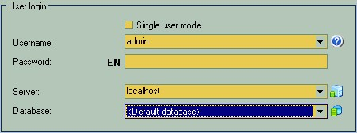

|
This is the first form you'll see after the OK-Inventory startup. OK-Inventory is a multi-user system by design. This means that more than one user with different privileges and access rights can be registered to use the software. Also that is possible to use same or multiple databases from multiple working seats. Therefore, even if you're the sole runner of the business you should identify yourself to the system. The default and single user that always exists on the freshly installed system is "admin". That is the name of almighty administrative super-user that have rights to do and see anything. You may decide to use it from the start if you the only operator of the software or if all users can be trusted to a full range of access rights.
This button unrolls the advanced connection settings that let you switch between servers and databases. Also you can start the masters to create new or register existing database here. The OK-Inventory Client application can utilize a single database connection to the single OK-Inventory Server application host at the time. So if you have multiple working groups of people you may setup multiple OK-Inventory Server applications hosting different databases to match the each group's tasks. At this time you will be able to use any server and any database that you have rights to access. In such way for the Head of the business it is possible to maintain it's control over the business itself and employees performance from single seat, without walking even into remote locations.

|